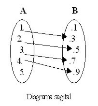
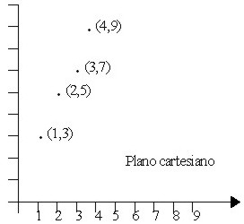

Relaciones y funciones |
Entender los conceptos de Relación y de Función es de suma importancia en Matemática.
Para lograr esa comprensión es necesario adentrarnos en la noción de Correspondencia, ya que esta tiene un papel fundamental en las relaciones y funciones.
Lo primero es entender que Correspondencia es equivalente a Relación. En nuestra lengua, decir "en relación a", es equivalente a decir "corresponde a".
Ejemplos:
En una tienda comercial, cada artículo está relacionado con su precio; o sea, a cada artículo le corresponde un precio.
En la guía telefónica, cada cliente está relacionado con un número; o sea, a cada nombre de la guía le corresponde un número.
En matemática, Relación es la correspondencia de un primer conjunto, llamado Dominio, con un segundo conjunto, llamado Recorrido o Rango, de manera que a cada elemento del Dominio le corresponde uno o más elementos del Recorrido o Rango.
Por su parte, una Función es una relación a la cual se añade la condición de que a cada valor del Dominio le corresponde uno y sólo un valor del Recorrido.
De las definiciones anteriores podemos deducir que todas las funciones son relaciones, pero no todas las relaciones son funciones.
También debemos agregar que toda ecuación es una Relación, pero no toda ecuación es una Función.
Todas las Relaciones pueden ser graficadas en el Plano Cartesiano.
Ver: Plano Cartesiano
Dados dos conjuntos A y B una relación definida de A en B es un conjunto de parejas ordenadas (par ordenado) que hacen verdadera una proposición; dicho de otro modo, una relación es cualquier subconjunto del producto cartesiano A x B
Ejemplo 1.
Si A = {2, 3} y B = {1, 4, 5}, encontrar tres relaciones definidas de A en B.
Solución
El producto cartesiano de A x B está conformado por las siguientes parejas o pares ordenados:
A x B = {(2, 1), (2, 4), (2, 5), (3, 1), (3, 4), (3, 5)}
Y cada uno de los siguientes conjuntos corresponde a relaciones definidas de A en B:
R1 = {(2, 1), (3, 1)}
R2 = {(2, 4), (2, 5), (3, 4), (3, 5)}
R3 = {(2, 4), (3, 5)}
La relación R1 se puede definir como el conjunto de pares cuyo segundo elemento es 1, esto es, R1 = {(x, y) / y = 1}.
La relación R2 está formada por los pares cuyo primer componente es menor que el segundo componente, R2 = {(x, y) / x < y}
Y la relación R3 está conformada por todos los pares que cumplen con que el segundo componente es dos unidades mayor que el primer componente, dicho de otro modo, R3 = {(x, y) / y = x + 2}
Así, se puede continuar enumerando relaciones definidas a partir de A x B. Como se puede ver, la regla que define la relación se puede escribir mediante ecuaciones o desigualdades que relacionan los valores de x e y. Estas reglas son un medio conveniente para ordenar en pares los elementos de los dos conjuntos.
Ejemplo 2.
Dados los conjuntos C = {1, –3} y D = {2, 3, 6}, encontrar todos los pares ordenados (x, y) que satisfagan la relación
R = {(x, y) / x + y = 3}
Solución
El producto cartesiano de C x D está formado por los siguientes pares ordenados
C x D = {(1, 2), (1, 3), (1, 6), (–3, 2), (–3, 3), (–3, 6)}
Las parejas ordenadas que satisfacen que la suma de sus componentes sea igual a 3 son:
R = {(1, 2), (–3, 6)}
Toda relación queda definida si se conoce el conjunto de partida, el conjunto de llegada y la regla mediante la cual se asocian los elementos. En el ejemplo anterior, el conjunto de partida corresponde al conjunto C, el conjunto de llegada es el conjunto D y la expresión x + y = 3 es la regla que asocia los elementos de los dos conjuntos.
El dominio de una relación es el conjunto de preimágenes; es decir, el conjunto formado por los elementos del conjunto de partida que están relacionados. Al conjunto de imágenes, esto es, elementos del conjunto de llegada que están relacionados, se le denomina recorrido o rango.
Ejemplo 3
Sea A = {1, 2, 3, 4} y B = {4, 5, 6, 7, 8} y R la relación definida de A en B determinada por la regla "y es el doble de x" o "y = 2x", encontrar dominio y rango de la relación.
Solución
El total de pares ordenados que podemos formar, o producto cartesiano es:
A x B = {(1, 4), (1, 5), (1, 6), (1, 7), (1, 8), (2, 4), (2, 5), (2, 6), (2, 7), (2, 8), (3, 4), (3, 5), (3, 6), (3, 7), (3, 8), (4, 4), (4, 5), (4, 6), (4, 7), (4, 8)}
Pero los pares que pertenecen a la relación R (y = 2x) son solo:
R = {(2, 4), (3, 6), (4, 8)}
En esta relación vemos que: "4 es el doble de 2"; esto es, "4 es la imagen de 2 bajo R", dicho de otro modo, "2 es preimagen de 4".
Así, el dominio y rango son:
D = {2, 3, 4}
Rg = {4, 6, 8}
Según lo que vemos, ¿Qué relación hay entre el Dominio y el conjunto de partida?
En el Dominio falta el elemento 1 del conjunto de partida, por lo tanto el Dominio es un subconjunto de A.
Otra pregunta: ¿Todo elemento del conjunto de llegada es elemento del rango?
La respuesta es no, pues en el rango faltan el 5 y el 7.
Los pares ordenados se pueden representar gráficamente por medio de diagramas sagitales o por medio de puntos en el plano cartesiano. Veamos el siguiente ejemplo.
Ejemplo 4
Si A = {1, 2, 3, 4, 5} y B = {1, 3, 5, 7, 9} y R la relación definida por la regla
R = {(x, y) / y = 2x + 1}, graficar R.
Solución
Los pares ordenados que pertenecen a la relación (que cumplen con y = 2x + 1) son:
R = {(1, 3), (2, 5), (3, 7), (4, 9)}
Y la gráfica correspondiente es la siguiente:
|  |  |